FinnAPL Spring Meeting 2011
Vector 25:1, page 24
FinnAPL celebrates 30 years¶
This meeting was a good mix of history (both of FinnAPL and the various statistics associations that have always formed the backbone of the group) and some very leading-edge material, like Tomas with his boat simulator, using the 8-way parallel capabilities of the GPU to run part of the physics model.
As ever, the location was part of the point, although much of the European Tour golf course was still under snow. However it was almost shirt-sleeve warm and the snow was subliming away as you watched, so we both came back a lot browner then we were on arrival!
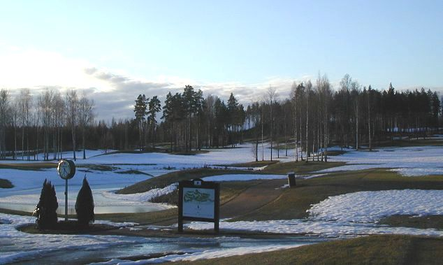
I can see why the Finns are so good at creating usable devices (like Nokia phones) – they have such a simple pragmatic approach to problem-solving, always taking the shortest route to a good result. They are natural ‘extreme’ programmers, finding a small corner of a problem which has a known need and a simple solution, implementing that, and moving on carefully to the less sure parts. Maybe a lifetime of ice-fishing has something to do with this? Put one foot in the wrong place and you get very cold rather quickly!
Meeting notes (day-1)¶
A History of Astika Jaakko Ranta (Statistics Finland)¶
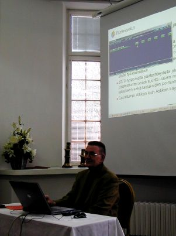
Astika is a time-series database, which began in 1979, after one year in the planning. APL was widely available (and was being actively sold by IBM) so VS APL running on VSPC was the natural choice for an interactive system. It started life on 300baud terminals, but soon moved to 3270 displays, with printed (and commonly memorised) code catalogues for cheap and efficient access. The internet edition began in 1995, by which time over 30,000 timeseries were available, requiring two big folders for the codes (but many customers just knew the codes they used!).
From 1985 it was available in English, and from 1987 real-time updates of industry data began. APL*PLUS/PC could be used to view the data, but at a cost of 1 interpreter per user it was way too expensive. An AI project was begun to enable a true ‘natural language’ user-interface; this was eventually abandoned, but it left behind a well-defined query language which may still be used to this day.
PC-Astika (1990-2010) ran in APL2/PC (free packager and runtime), in parallel to an early Windows system (written in Visual Basic), until both were superseded by Astika-W in Dyalog APL from 2000 onwards. This was always a server application, using a single database on component files, with users accessing the data over TCP/IP. The data-maintenance was gradually re-written, and graphics added with RainPro.
From 2009, all the data was moved to PX-Web to fit with other national databases, but it has been hard to get rid of all the (paying) customers for the old system! They like being able to save their queries (not available in the new system). The web interface makes good use of SharpPlot to serve custom charts beside the traditional tabular data.
News from Dyalog Gitte Christensen (Dyalog Ltd)¶
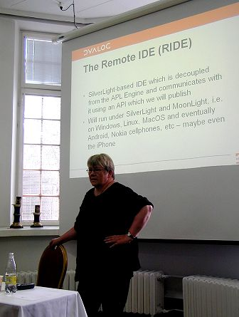
The theme of the talk was all about allowing the domain expert to work closely with (or often to be) the programmer. Eight of the ten largest customers (who account for 80% of the revenue) grew in this way, and many are now professional software vendors. Asset management is typical (Simcorp, APL Italiana, FiServ, InfoStroy) with reporting and budgeting (KCI, Carlisle Group) also prominent. Then there is ProfDoc which does healthcare for 40,000 patients in Sweden, is heading towards 1m records, and may soon be the biggest medical records system in the world. Exxon-Mobil reckon that their refinery optimiser is worth at least $50m pa (and rising with the oil price). All these are classic examples of offering an expert a tool for thinking, and waiting 10 or 15 years for a locally-developed solution to grow into something very significant.
As well as supporting established experts, the new challenge is to tease and bribe the kids with a free APL. Over 1000 have been licensed to date, with new enquiries arriving daily from students of finance, business, physics and environmental studies. The annual programming contest led to a winter internship for the winner, and maybe after his PhD he will be back! Last year’s winner is helping to design this year’s contest, and each one results in a run of new educational licences.
The fair pricing model – pay nothing until you make money, then a simple royalty – is working well. As customers invest more in APL, Dyalog have been able to build their full-time staff up from 5 to 20, and Gitte is confident that the company now forms a stable, viable investment for the shareholders. The next opportunity to get together will be in historic downtown Boston (John Hancock’s house) from 2-5 October 2011; meanwhile more code-sharing with ]ucmd will be encouraged, along with forum activity and even Twitter.
New applications are typically web-based, and several old customers have returned to build the next generation. Many retired APLers are taking the non-commercial licence, and are helping to enhance the interpreter by encouraging the less commercial aspects, like complex numbers and primes. Dyalog are still waiting for that blockbuster application (such as launched Python) but feel ready for it when it comes, with an integrated approach to functional, array and object-oriented programming.
APL# and R-IDE will allow APL to run wherever a browser can run, or to be spread across machines, with the development environment on your laptop (or phone) and the interpreter on some IBM mainframe under Linux if that is what you need. Other research projects include bridging to Java, JIT compilation of Dfns, and rational numbers. Morten can fill in the details tomorrow!
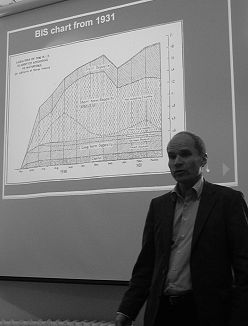
Paradigm shift – from paper to interactive Timo Laurmaa (BIS)¶
Timo succinctly described his role in the BIS as “Helping the data to speak”. As head of web communications and publishing, he is actively researching the paradigm shift from paper to interactive, firstly in finding out the requirements, and then thinking how to improve the tools. The toolkit must adapt to the new media, but the graphics should continue to convey the message about the data; all this must happen without a big change to the existing paper workflow.
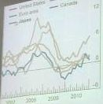
This shows a simple modification to one of the many line-charts from the latest BIS Quarterly Report (download the PDF from their website to see the originals). What Timo has done is greyed all the lines, and then coloured the one that the user points to with the mouse. This can easily be added to the original workflow without changing the printed image, but is a real enhancement to the SVG version.
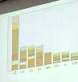
Stacked barcharts are quite bad even on paper, so applying the same simple approach to user-selection may not be enough to make this one work well. Highlighting sections in the middle of a deep stack still leaves the data hard to see, so maybe the stack could re-arrange, or the chosen series could be run out as an overlay plot just below the composite? More experiments are clearly needed here!
The other challenge is to pick up the Wow! element in the data and have it jump off the screen as the presenter talks in front of it. Timo showed a splendid modification to the UK interest chart which ran up to 2008 on a y-axis ranged from 3.5% to 7% – running this forward with the y-axis diving to zero to follow the plummeting data line really hit you in the face with the message “Something unheard-of just happened” which is the whole point of the presentation!
One final challenge is to find a good way of pulling out extra dimensions as the user navigates the chart. Timo’s final example was a gantt chart of the Finnair fleet showing the planes down the left, and coloured bars for the inbound and outbound legs. By pointing to a leg with the mouse, you could show the routing (useful) and show all the other legs from all the other planes which were flying the same route (simply by re-colouring the bars).
This was a good point for Timo to hand over to Adrian, who spent Wednesday working with him and Morten in an attempt to understand how SharpPlot/Rainpro might begin to implement some of these ideas.
Animations in SharpPlot Adrian Smith (Causeway)¶
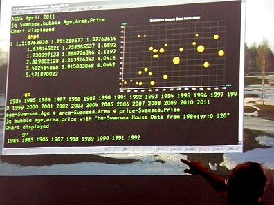
This talk was largely born out of a full day spent chatting with Timo and Morten the day before the conference began. We started by exploring the requirements for animations, and then developed a couple of simple demos to show what current technology could achieve easily (well, in less than 6 hours after a few beers!).
Incidentally, the APL session in the picture (taken by Timo) nicely illustrates the use of ]ucmd to allow APL to behave as a simple SQL engine for data exploration. The SQL syntax (at least the variant of it devised by Arthur Whitney called q) is ideally suited to the task of drawing charts from data in the workspace, and the great thing about user commands is that the interpreter never sees your (very non-conforming) syntax, and the session syntax-colouring also ignores it.
The requirements clearly begin with simple enhancements to existing paper charts. If you grab almost any PDF from www.bis.org you will see lots of classic small multiples, where a grid of similar charts (generally with identical axis ranging and a common legend) are used to compare countries or time periods. This works well on paper (really good colour discrimination, massive resolution) but really badly on a typical laptop display, and is utterly useless on a phone. By creating these as a stack of pages, with a simple user-driven scroller or page control, the problem is largely solved – minimal change to the paper workflow, a simple mod to SharpPlot to output the trellis as a paged stack, and this should be achievable in almost any medium.
A variation on this theme is where there are lots of lines on a timeseries, or a big stack of bars on a barchart. On paper, colour discrimation seems to work much better, and the user can generally follow a line without difficulty. On screen you need to add some (simple) JavaScript so the user can pick out the line of interest, having drawn them all in a low-contrast grey to begin with. This is very easy in SVG or XAML, but hard to do well if you are limited to raster images (PNG or JPEG) where some experimentation will be needed to see how seamless this can be made to feel. Again, it should be possible without a complete re-design of the original chart – Timo is still aiming to leave the BIS workflow unaltered as far as possible.
The prime use of animation seems to be for presenter emphasis, rather than as a passive or user-driven display on the internet. There may be good examples out there where (for example) animation of the time dimension adds visibility to the data, but all the ‘cool stuff’ on Google Docs seems to leave the end-user in control of the hidden dimension. On the other hand, when a presenter is standing in front of a moving chart, which is well-timed to add punch to the point being made, the effect is very powerful and adds genuine value. A simple barchart can be timed to grow in the time it takes for the presenter to tee-up a rhetorical question, and then deliver the punch-line for him. This can be done now with SharpPlot and SVG animation, but (as Adrian illustrated by messing up several times) it requires a good knowledge of the SMIL tags and a strictly logical mind to get all the parts to work well together. Here is the finished example in SVG – have a look at ‘View, Page source’ to see all the animate tags which the programmer either added in SharpPlot/RainPro as Effects, or post-processed with a text editor in the generated SVG.

There may well be a use for simple animation for smoothing out the transitions when a chart steps through time, and the steps might involve uncomfortably large jumps between frames. The photo at the top of this report shows a faked growth pattern in Alan Sykes’ data from ASLGreg, first shown at Swansea in 1984. All I did was create a bubble-chart of the prices, then hammer around a tight loop applying the Nationwide house-price index to the numbers.
⍝ Base data
age←Swansea.Age ⋄ area←Swansea.Area ⋄ price←Swansea.Price
:For yr :In ⍳⍴∆hpi
age←Swansea.Age+yr
price←Swansea.Price×∆hpi[yr]
⍞←' ',⍕1983+yr
⎕DL 1
:End
Crude, but has quite a good element of suspense, and a suitable ‘Wow factor’ as the market suddenly explodes around 2004. This could implement very well in SVG (with animations to smooth the movement and growth of the bubbles from frame to frame) or maybe just as a stack of images with some trivial JavaScript to work down the stack. Switching the visibility of each image should give a relatively flicker-free transition on this kind of progressive time-series.
Summary – lots of possibilities, and the technology is catching up fast (all the top browsers now do SVG, and everything with the SilverLight plugin does XAML). Ideas welcome, prototyping starts here.
The StormWind simulator Tomas Gustafsson (Stormwind Ab Oy)¶
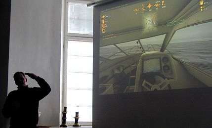
Yes, we have seen this before, but what we was today is a massive step forward in realism and visual quality. Partly it is all about hardware – graphics cards are where much of the best research is going these days, and system memory is no longer a constraint on design. The version we saw was developed with sponsorship from the Finnish maritime organisation, and is a free download if you want to test your boat-driving skills. It has full digital charts for Finnish coastal waters, so there are plenty of islands to run into.
Essentially, it gives a step-by-step introduction to what happens in your smart new boat, from the list of mandatory safety equipment to the recognition of multi-sector lights and buoys by night. The data-processing challenge was to create virtual reality out of a truly obscure 1980s’ standard for digital mapping (has anyone heard of octets these days?). Then there is the annoying issue wth DirectX which uses float rather than double so you only have 32 bits of precision. If your boat is 10km away from base, then a 5cm wave height cannot be expressed accurately, and things start to get lumpy. Essentially, addition doesn’t work any more! So you have to shift the world on the medium scale and the boat on the small scale – it hardly matters if you get an island 5cm off!
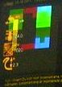
A very neat trick Tomas used for processing speed was to implement the physics model of wave-height on the boat’s motion 24-way parallel in the GPU. A little debugging display in the top left showed the sum of the forces at 8×3 points on the hull as colours (GPUs always return colours) which could easily be decoded to give the hull an appropriate kick. Certainly the realistic waves and (very) realistic cabin motion were highly impressive. And yes (before someone tries it) – if you drive flat out at an island you can beach yourself among the trees!
Meeting notes (day-2)¶
Calling Demetra+ for seasonal adjustment Jouko Kangasniemi (EK)¶
Taking the seasonal effects out of quarterly data is one of those messy challenges that does not implement well in APL. A simple moving average makes a mess of the ends, and modern techniques like X12 and Arima are highly iterative. Jouko has been exploring a new library (set up as an EU project) called Demetra+ which brings together many Java and C# libraries with a common interface. It accepts XML data (easy to format with the ⎕xml system function), or you can call the .Net interface. Using the Dyalog Metadata option in the Workspace Explorer is most helpful when browsing around the library. It is quite huge, with a full set of numerical methods, but far from fully documented, so expect quite a lot of status messages and DOMAIN ERRORS as you get the calls to work from APL.
It is redistributable, and should be much easier to set up than the R library (and its COM interface) if you need to include some of the routines as part of a shipped application.
What’s cooking at Dyalog Morten Kromberg (Dyalog Ltd)¶
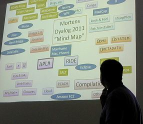
Version 13 may look much the same on the outside, but it has 128-bit float so it can do currency calculations to the nearest cent and not lose anything in the rounding. In earlier APLs:
But with version 13 you can set ⎕fr←1287 ⋄ ⎕pp←34 and zero is what you get, to 34 dec places. Of course it runs slower (only the IBM RISC machines do this in hardware) but you save so much ‘check it and fix the result’ code that the application may speed up, and it gets so much simpler to maintain.
With complex numbers ¯1*0.5 works as engineers always hoped it would, and the absolute limit on array size (2 billion elements) has been lifted. This is hard to test – Dyalog are upgrading a machine to 64Gb of RAM to give it a work-out! Perl-style regexp is built in now, for search and replace on text vectors, and application profiling has been made much easier to use. Short left arguments to ↑↓⌷ neaten up your code a little by filling in the spare dimensions, and you can use ⊢⊣ to chain expressions in a much more functional style than by using diamonds. The IME can help with overstrikes (by showing a drop-list) and can also be set to ignore the next keystroke, allowing Ctrl+S to make an upstile in APL and save your work in Notepad.
The mind map has nearly 50 topics on it for future work, but there are now nearly 20 people on the team, so that is only around 3 items each! This is roughly the size of group that IPSA and IBM ran with back in the days when they majored in APL, so it is definitely manageable and has been very productive in the past. Themes are speed, portability, power & simplicity, security & encryption. There will be a strong focus on tools and training materials.
Some old assumptions will have to go – in APL# parallel operators like f¨ do not guarantee the order of execution; partial compilation will be required to make larger chunks that can run in parallel. This will work much better with Dfns, so try and aim new code towards a pure functional style if you can. APL# will be pure managed code, so it will run in the browser, or anywhere else you can use JavaScript. R-IDE will run wherever SilverLight runs (very likely on the ARM chip with Windows-8 – look out for Nokia) and the bridge idea will be extended out from .Net to Mono and Java. If you want to see more, better be in Boston in early October!
PX-Edit retrospection Veli-Matti Jantunen (Statistics Finland)¶
You will have to wait for the full report on this one – I enjoyed the cartoon slides rather too much and my note-taking fell away almost to zero. A couple of technical points that I did pick up: by all means upgrade on the fly (the .exe is just a loader, pulling everything off file as ⎕OR, but make sure to fire this off a timer, as many users leave the application running continuously). Also it is best to turn off ClearType for printing, as it can make the text look fuzzy at small sizes. Ask Veli-Matti if you need to do this – the switch is hidden deep in Windows and is not trivial to get at!
The PLURAL programming language Walter Fil¶
I’m sure Walter will write this up for us when it has progressed a little further. It is an attempt to make a consistent array language out of a Java-like structure, but without all the depressing coding needed to handle simple array operations. Maybe a sort of numerical Python. I will follow its progress with interest, as he gets parts of it running to the point where I can fool around with it. It is still mostly in its PowerPoint phase, so is hard to evaluate in any useful way.
Round-up¶
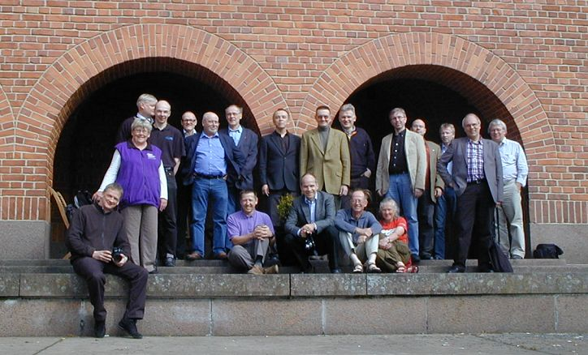
The organisation was efficient and everything went to plan; the sun shone, the birds were singing and we saw a Camberwell Beauty in the woods near the airport, so a very successful trip. I think some good work was done, and everyone came away feeling more positive about APL than they had done for some time. So well done the Finns, see you next year!